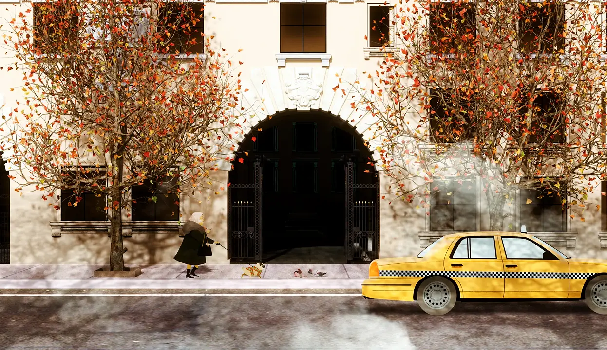
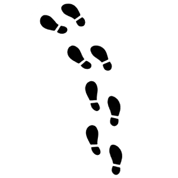
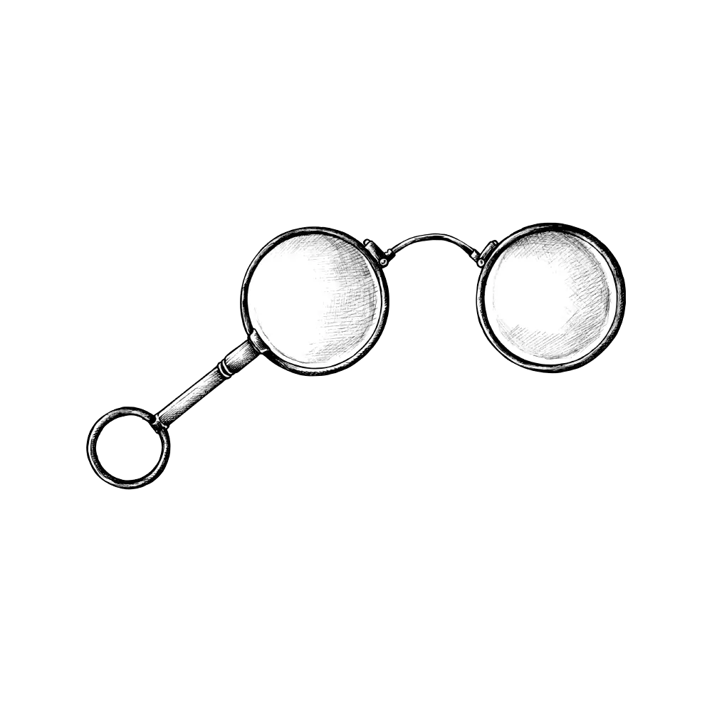

Between the floors
Lift the curtain on the mysteries, Easter eggs, and trivia tucked into every corner of the Arconia.

Where every detail becomes evidence…
The Arconia
The Arconia itself is inspired by the real‐life Belnord on the Upper West Side, and directors filled it with old‐school mystery vibes… Hitchcock-style angles, colour‐coded clues, and shots designed to make you want to hit "pause" every five seconds.
Hiding in Plain Sight
Season 1 greets sharp‐eyed detectives right away with a surprise: a literal painted Easter egg tucked between two cherubs above the Arconia's archway.
A Quick Study
Nathan Lane went full‐method and learned ASL in just six weeks so he could perform seamlessly with James Caverly. That's dedication!

Breaking Records
The show didn't just win hearts, it broke records! Season 1 became Hulu's most‐watched comedy at the time, proving that true crime and New York pairs surprisingly well.
The Blueprints
The show was co-created by Steve Martin and John Hoffman. Martin got the initial idea from a dinner party where he thought of three older men living in a fancy building and deciding to solve crimes only within their building.

Don't Blink!
The title sequence changes every episode, sneaking in little animated hints tied to that week's mystery‐like a shadowy figure in a window or props that match unfolding clues. Blink and you might miss them!